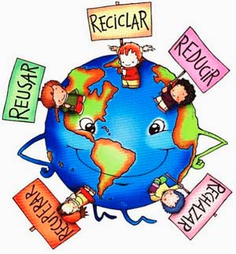
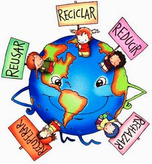

Tips para el cuidado del medio ambiente
<<<<<<< HEAD =======

>>>>>>> main
=======

>>>>>>> main
El Medio Ambiente es el conjunto de todas las cosas vivas que nos rodean. De este obtenemos agua, comida, combustibles, materias primas que sirven para fabricar las cosas que utilizamos diariamente; pero al abusar o hacer mal uso de los recursos naturales que se obtienen del medio ambiente, lo ponemos en peligro y lo agotamos.
recordar que el aire y el agua están sufriendo cambios drásticos, y los bosques debido a los incendios forestales están desapareciendo, es por ello deberiamos tener encuenta los siguientes tips para el cuidado de nuestro medio ambiente
| # | Tips para el cuidado del ambiente | Razones para realizar los Tips del cuidado del medio ambiente |
|---|---|---|
| 1 | Ahorra agua | Protejer nuestros ecosistemas y plantas y animales silvestres: los seres humanos no son las únicas especies que necesitan agua para sobrevivir. Sin agua, los organismos acuáticos no pueden sobrevivir. Ayude a proteger nuestro entorno: Reducir la cantidad de agua utilizada puede reducir la energía necesaria para tratar el agua. El ahorro de agua ayuda a reducir la contaminación y ahorrar combustible. Es necesario en casi todo lo que hacemos: necesitamos agua para beber, bañarnos, cocinar, lavar la ropa y muchas otras actividades
|
| 2 | Raciona el uso de la luz | Apaga las luces cuando no las necesites, también aprovecha la luz del día al máximo y cuando salgas de casa, siempre comprueba que todo esté apagado. el ahorro de energía es absolutamente necesario por ahorrar el uso de combustible que permiten la misma, que a su vez disminuye la emisión de gases que irrumpen en la atmosfera, protegiendo el medio ambiente. |
| 3 | Separa la basura | Usa las bolsas de los colores asignados y ten en cuenta las distintas canecas que encuentras en la calle para que siempre tires los residuos en el lugar adecuado. Este tipo de bolsas son más eficientes a la hora de llevar nuestros artículos, por lo que en una sola de ellas caben productos suficientes, haciendo que sea mucho más fácil cuando hacemos una compra. Se reduce la necesidad de enterrar ó quemar residuos no reusables o reciclables. Nos permite aprovechar los residuos orgánicos |
4 | Lleva tus bolsas de mercado | Al usar bolsas reutilizables nos hace crear conciencia en el daño que hemos causado a nuestro planeta, abriendo nuestra mente a pensar distinto sobre cómo vivimos. Las bolsas reutilizables son fáciles de limpiar y lavar, inclusive podemos pasar un paño húmedo en ellas y estará como nueva. Utilizar estas bolsas ayuda a que otros quieran unirse a la causa por lo que crea conciencia y enseña a nuevas personas sobre cómo cuidar nuestro ambiente. Puedes colocar una bolsa encima de la otra y ubicarlas en un cajón de esta manera estarán todas ordenadas y serán fáciles de sacar cuando decias ir de compras. |
las principales razones para cuidar el medio ambiente podemos destacar las siguientes:
- No hay un planeta B en el que podamos vivir como en la Tierra, por lo que es nuestro único hogar y el de las futuras generaciones.
- Favorecer la supervivencia y evolución del resto de seres vivos.
- Asegurar la supervivencia de la especie humana.
- Permitir que haya equilibrio ecológico.